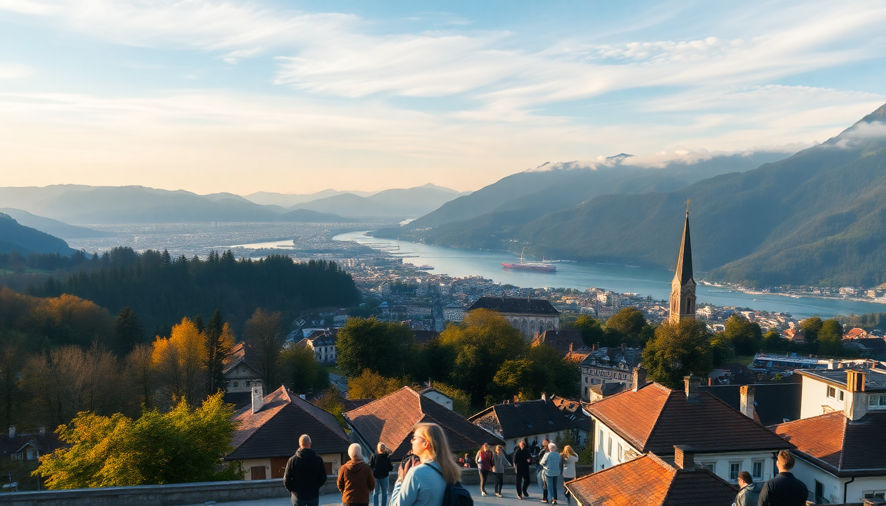

7 Day Switzerland Itinerary: Zurich, Lucerne & Interlaken

We landed in Zurich with a loose plan and a Swiss Travel Pass in hand, and after a week hopping between Zurich, Lucerne, and Interlaken, I can tell you exactly what works and what doesn’t. This itinerary skips the fluff and focuses on how to actually spend your time—where to eat, what trains to catch, and which sights justify the ticket price.
Why start in Zurich and end in Interlaken?
Zurich’s airport is a major hub, so flying in and out of there saves time and money. The train from Zurich to Lucerne takes about 45 minutes, and Lucerne to Interlaken is another two hours on the scenic GoldenPass line. Ending in Interlaken gives you easy access to the Jungfrau region without backtracking.
- Zurich works best as a 1.5-day city stop—enough to see the old town and eat well, but not a place you need a week.
- Lucerne is compact but packed: the Chapel Bridge, Lion Monument, and a lake cruise fit into two days.
- Interlaken is your base for the mountains: Grindelwald, Lauterbrunnen, and Jungfraujoch are day trips by train.
What’s the best way to get between cities?
Swiss trains are the backbone of this trip. We bought a 4-day Swiss Travel Pass (covers consecutive days), which paid for itself after two long train rides and a lake cruise. For shorter hops, buy point-to-point tickets via SBB Mobile app.
- Zurich to Lucerne: Direct trains every 30 minutes, 45 minutes. Sit on the left for lake views.
- Lucerne to Interlaken: The GoldenPass line via Brünig. Book a seat in the panoramic car if you want glass windows, but standard trains have good views too.
- Interlaken back to Zurich Airport: Direct trains run hourly, about 2 hours 10 minutes.
Where should we stay in Zurich?
Skip the expensive hotels near Bahnhofstrasse. We booked a room at Hotel Schweizerhof Zürich right across from the main station—pricey but worth it for the location and included breakfast. For budget travelers, ibis Styles Zurich City near the Langstrasse nightlife area is clean and a 10-minute tram ride from the old town.
- Niederdorf (old town’s pedestrian quarter) is where we spent most evenings—bars, casual restaurants, and a lively but not rowdy vibe.
- Kreis 4 (Langstrasse area) has affordable eats and a more gritty, local feel.
What should we eat and do in Zurich?
Zurich’s food scene is good but expensive. We skipped the tourist-trap fondue places on Bahnhofstrasse and ate at Zeughauskeller, a historic beer hall serving hearty Zürcher Geschnetzeltes (veal in cream sauce) under vaulted ceilings. For a quick lunch, Hiltl is the oldest vegetarian restaurant in the world—the buffet is pricey by weight, but the curries are excellent.
- Lindenhofplatz: A quiet hilltop square with bench views of the old town. Free, and usually not crowded.
- Kunsthaus Zürich: Art museum with a strong modern collection. Skip if you’re short on time; the permanent collection is solid but not mind-blowing.
- Lake Zurich promenade: Walk from Bürkliplatz to Zürichhorn—about 40 minutes one way. Rent a paddleboat if the weather cooperates.
What’s the real Lucerne experience (not just the bridge)?
Lucerne’s Chapel Bridge is lovely but packed with selfie sticks from 10 AM to 4 PM. Go at sunrise or after 7 PM. The Lion Monument is a 10-minute stop—worth seeing, but don’t plan more than that. The real Lucerne is the lake cruise and the nearby mountains.
- Lake Lucerne cruise: Take the boat from the main pier to Weggis or Vitznau (1 hour each way). The Swiss Travel Pass covers it at no extra cost. We got off at Weggis for lunch at Restaurant Schiff—fresh perch filets with lake views.
- Rigi: From Vitznau, take the cogwheel train to the top. The panorama of the Alps and lakes is genuinely impressive, and there’s a bar at the summit station.
- Museggmauer: The old city wall with nine towers. You can climb four of them for free. The Zyt Tower has a 16th-century clock mechanism.
Is Interlaken worth it, or just a tourist hub?
Interlaken is a gateway, not a destination. The town itself is a shopping strip of watch stores and souvenir shops—we found it underwhelming. But its location between Lake Thun and Lake Brienz makes it the perfect base for day trips into the Bernese Oberland.
- Grindelwald: Take the train from Interlaken Ost (30 minutes). Walk the Gletscherschlucht (glacier gorge) or ride the gondola to First for cliff walks and mountain views.
- Lauterbrunnen: Also 30 minutes by train. The Staubbach Falls drop 300 meters right behind the village church. From here, take the train to Wengen or Kleine Scheidegg for hiking trails.
- Jungfraujoch: The “Top of Europe” train is expensive (around CHF 200 round-trip). We did it, and the views are incredible, but the crowds at the summit station are suffocating. Go early (first train at 6:35 AM) or skip it for cheaper alternatives like Schilthorn (Piz Gloria).
How do we handle food and logistics in Interlaken?
Restaurants in Interlaken are overpriced and mediocre. We ate at Hüsi Bierhaus for decent Swiss-German pub food (schnitzel, rösti) and Bären near the west station for pizza. For groceries, Coop at Interlaken West has a good ready-meal section—perfect for picnic lunches on the train.
- Swiss Travel Pass: Covers trains, buses, boats, and most mountain railways (excluding Jungfraujoch). We activated ours on day two and saved about CHF 150 per person.
- Luggage storage: Most train stations have lockers (CHF 6-12 for 24 hours). We stored bags at Zurich HB on our last day while exploring before the flight.
- Tipping: Service is included in restaurant bills (usually 10-15% is already added). Round up for good service, but don’t feel obligated.
FAQ
Is the Swiss Travel Pass worth it for this 7-day itinerary? Yes, if you’re taking three or more long train rides and at least one lake cruise. We calculated the cost: a 4-day pass (CHF 232 per person in second class) covered Zurich to Lucerne, Lucerne to Interlaken, the GoldenPass return, and the Lake Lucerne cruise. Without the pass, those tickets alone cost over CHF 200. The pass also gives free city transport in Zurich and Lucerne.
Can we do this trip without renting a car? Absolutely. Swiss trains are efficient, punctual, and connect every city and village on this itinerary. A car is more trouble than it’s worth—parking in Zurich and Lucerne is expensive, and the mountain roads to Grindelwald or Lauterbrunnen are better left to the train. We never needed a car.
What’s the best time of year for this route? May through September offers the most reliable weather for lake cruises and mountain hikes. We went in late June, and the trails above Grindelwald were snow-free. Late September is quieter but cooler. December is magical for Christmas markets in Zurich and Lucerne, but expect shorter daylight hours and possible snow closures on the Jungfrau railway.
Conclusion
- Start in Zurich for easy arrival, spend one full day exploring the old town and lake, then move on.
- Lucerne deserves two days: one for the city sights and one for a lake cruise and Rigi.
- Use Interlaken as a base for Grindelwald, Lauterbrunnen, and mountain hikes—don’t linger in the town itself.
- Buy a Swiss Travel Pass for trips between cities and lake cruises, but skip it for the Jungfraujoch train.
- Pack layers and waterproof shoes; mountain weather changes fast, even in summer.